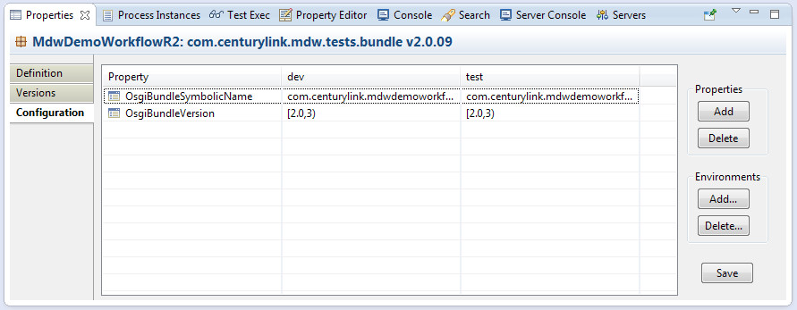

Workflow Package Configuration
When deploying in a cloud environment the mechanism for setting your app-specific workflow properties is through MDW Package Configuration.
This enables you to configure custom settings that apply only to your particular workflow application.
Also, the MDW runtime provides many injection points where you can configure behavior provided by your custom deployable artifact (OSGi Bundle or Jar File).
Examples of this include Dynamic Java, Camel Integration, and Spring Workflow Assets.
Frequently you'll want to associate your workflow package with a corresponding deployable artifact so that MDW knows where to locate your custom code.
This is accomplished using Package Configuration as well.
Maintaining Package Configuration
To access workflow package configuration in Designer, right-click on a package in Process Explorer view and select Show Properties.
Then select the Configuration tab in Properties View. The screenshot below illustrates a workflow package that already contains some configuration settings.

Package settings are configured per-environment (even for those such as in the illustration which are not environment-dependent).
To add a new property value, click the Add button under properties. To add another environment, click the Add button under Environments.
The environment name must correspond to the runtimeEnv Java system property that MDW uses to identify which type of environment you're running in.
The runtimeEnv can be any value, but two values have special meaning: dev and prod (both lower case). Dev environments allow convenience features such as unauthenticated access.
Prod environments require special permissions and confirmations before performing certain actions, and disallow other actions completely.
The package configuration settings are exported along with the processes and assets for a package, and so they carry forward when migrated to a new environment.
You can leverage your package configuration properties using the props binding expression syntax in your activity design attributes,
and in your programmatically through the MDW PropertyManager API.
This gives you a mechanism for plugging in environment-specific values.
OSGi Bundle Spec Properties
The properties shown in the screenshot have special significance to the MDW runtime in an OSGi environment such as ServiceMix or Fuse.
The property OsgiBundleSymbolicName designates a bundle that should be accessed by MDW when locating custom implementation
(such as bundle classes accessed by Dynamic Java Managed Beans).
In OSGi environments a common strategy for handling in-flight processes is to leave your old bundle in place while
deploying a new bundle alongside it to handle new processes.
This is possible in OSGi because each bundle gets its own ClassLoader, so multiple classes with the same name can coexist in the container.
This ability enables you to develop your new bundle classes without having to worry about compatibility with pre-existing process instances.
One ingredient in this strategy is to use a Version Aware Provider
for MDW Activities. For workflow assets like Spring configs or Dynamic Java Managed Beans, another ingredient is to specify
the OsgiBundleVersion package property, which tell MDW that it needs to look in a specified version of your bundle when accessing your classes.
The bundle specification follows the OSGi version range syntax as documented in the MDW BundleSpec class API.